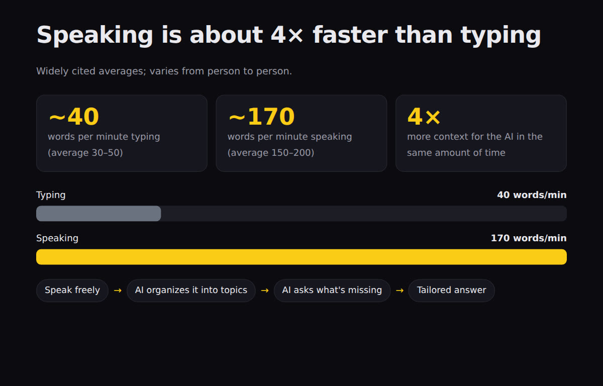

When we think of who gets the most out of technology, someone like Elon Musk comes to mind. You don't have to be one of them: these are 7 simple habits, with practical examples and a kit ready to use today.
Elite AI is a guide to the 7 habits that separate people who really use AI from those who just ask loose questions in a chat: speak instead of typing, let the AI listen to the meeting, ask for visuals instead of text, be interviewed by the AI, ask for flaws, test with your own hands, and keep an open mind. It is for anyone who already uses ChatGPT, Claude or Gemini. It comes with an open and free kit with 7 prompts to copy, 4 skills for Claude Code and scripts that run on your computer. For the prompts, a chat is all you need; for the scripts, Python.
The difference isn't in the tool (most people use the same ones), it's in how you use it. The 7 habits change how much context you give, the format of the answer, and how honest it is.
Speaking, you pass about 4 times more information per minute. The meeting turns into minutes and tasks on its own.
Dashboards, charts, and 3D instead of paragraphs. The AI interviews you first and shows you the flaws, not just compliments.
Open prompts, skills, and scripts (MIT license). Transcription on your own computer, with no audio uploaded and no paid API.
Each habit comes with an example to try today and the matching file in the kit.
On average, we type 30 to 50 words per minute; speaking, 150 to 200. More words in the same time means more context, and context is what makes the answer good. Speak without worrying about order: the AI organizes it.
Free everywhere: Windows Win + H · macOS dictation (Fn twice) · Google Docs › Voice typing · your phone keyboard's microphone · Linux with local Whisper (kit/scripts/ditado.sh). Train the vocabulary: names and acronyms you use.
In the kit: prompts/01-fale-nao-digite.md · scripts/ditado.md · scripts/ditado.sh
An executive assistant that transcribes the meeting and turns it into minutes and tasks: who does what, by when. The cost is close to zero compared with hiring someone for it. Record only with notice and everyone's consent.
Example: "Paulo: I'll review module three by Friday" becomes the line | Paulo | revisar o módulo três | sexta | in tarefas.md.
In the kit: scripts/reuniao.py (transcribes locally with faster-whisper) · prompts/02-ia-na-reuniao.md
Ask for visualizations instead of text: an HTML page with charts, animation or 3D (three.js). Any good chat can do this, and the page shows up ready to open.
Examples: your home's floor plan in 3D that you rotate with the mouse · a 20-page report turned into a dashboard with big numbers and bars · a hard concept turned into an animated explainer in 5 steps.
In the kit: prompts/03-mostre-nao-conte.md · skill mostra-nao-conta · example exemplos/painel-falar-vs-digitar.html
Before you ask, say: "ask me every question you need to do this the best way". One at a time. It pulls out of you the context you didn't even remember to give.
Example: instead of "make a marketing plan", the AI asks who it's for, what the budget is, what has already been tried, what the deadline is — and only then writes.
In the kit: prompts/04-a-ia-te-entrevista.md · skill entrevista-me
Chat models are trained with human feedback (RLHF), and we like hearing that we're right. That's why the AI tends to agree. "What do you think?" yields praise; "what's wrong? poke holes in my idea" yields useful work.
Example: paste your plan and ask for the 5 most serious flaws, from worst to least, the most fragile assumption, and a cheap test for it.
In the kit: prompts/05-peca-falhas.md · skill fure-minha-ideia
Instead of asking "can the AI do X?", ask it to do X right now. Capabilities change every week; yesterday's answer goes stale. Those who are ahead test with their own hands.
Example: "Don't tell me whether you can. Make the smallest possible version of this, show the result and propose the next test."
In the kit: prompts/06-teste-voce-mesmo.md · skill testa-agora (logs each test with its date in testes-ia.md)
Avatars, glasses and earbuds with AI, agents that operate the computer: a lot of it feels strange the first time. Testing is cheap; not testing is expensive.
In the kit: prompts/07-mente-aberta.md (5 new tests of up to 30 minutes for your field)
Everything in Portuguese, MIT license. Nothing installs itself: you choose what to use.
One per habit, in kit/prompts/. Copy and paste into ChatGPT, Claude or Gemini.
entrevista-me, fure-minha-ideia, mostra-nao-conta and testa-agora for Claude Code.
reuniao.py (meeting → minutes + tasks) and ditado.sh (dictation on Linux), with Whisper on your own computer.
kit/ ├── prompts/ # 01-fale-nao-digite.md … 07-mente-aberta.md ├── skills/ # entrevista-me · fure-minha-ideia · mostra-nao-conta · testa-agora ├── scripts/ # reuniao.py · ditado.sh · ditado.md ├── exemplos/ # reuniao-exemplo.txt · painel-falar-vs-digitar.html ├── testes/rodar.sh # validates the kit with no network and no API └── instalar.sh # copies the skills to ~/.claude/skills/
For the prompts, all you need is a chat. The rest is optional.
ChatGPT, Claude or Gemini, even on the free plan. That's enough for the 7 prompts.
To transcribe meetings and dictation on your computer, without sending the audio to anyone.
pip install faster-whisperSo reuniao.py can write the minutes by itself. Without them, the script generates a prompt for you to paste into the chat.
Real commands, tested on Linux. On Windows and macOS the prompts and skills work the same way.
Through git or the "Code › Download ZIP" button on GitHub.
git clone https://github.com/inematds/ia-de-elite.git cd ia-de-elite
The test runs offline and without any API key.
bash kit/testes/rodar.sh # ends with "30 ok · 0 falha(s)"
Open kit/prompts/05-peca-falhas.md, copy the block and paste it into your chat along with an idea of yours. Then try the other six.
cat kit/prompts/05-peca-falhas.md
Copies the 4 skills to ~/.claude/skills/. It does not overwrite a skill with the same name without --forcar.
bash kit/instalar.sh --dry-run # shows what will be copied bash kit/instalar.sh # in Claude Code: "poke holes in my idea: ..." · "interview me before ..." · "show, don't tell: ..."
Test first without audio, using the sample meeting. Then pass your own file (mp3, m4a, wav, mp4) or a ready-made transcript (.txt, .srt).
python3 kit/scripts/reuniao.py --simular --saida teste-reuniao cat teste-reuniao/tarefas.md pip install faster-whisper # once; runs on your computer python3 kit/scripts/reuniao.py reuniao.mp3 # uses claude -p or Ollama if you have them python3 kit/scripts/reuniao.py reuniao.mp3 --motor prompt # only generates the prompt to paste
Windows Win + H, macOS Fn twice. On Linux:
bash kit/scripts/ditado.sh --checar # what is installed bash kit/scripts/ditado.sh --vocab "INEMA, Claude Code" # speak, Enter, text copied
Generated by the kit's own files, unedited.

exemplos/painel-falar-vs-digitar.html, the format the mostra-nao-conta skill delivers — big numbers, labeled bars, and a flow.# python3 kit/scripts/reuniao.py kit/exemplos/reuniao-exemplo.txt --motor claude | Owner | What to do | Deadline | |-------------|---------------------------------------|-----------| | Paulo | Review module three of the script | Friday | | Bia | Build the sign-up page | Wednesday | | Rafael | Send the new photos to Bia | tomorrow | | Marina | Write the welcome email | no date | # ata.md — open points - The page depends on the photos Rafael is going to send. - The email has no deadline, but the launch is on 10/30.
tarefas.md and ata.md with claude -p ("quote from the conversation" column omitted here). Without AI, --simular makes a rules-based version.One habit per week works better than all seven at once.
reuniao.py on a real meeting and let the AI interview you before a project.